操作系统安全策略配置-WinXP实验
实验目的
1、 理解Windows操作系统的安全策略。
2、 掌握Windows操作系统的安全策略的配置。
实验要求
1、 认真阅读和掌握本实验相关的知识点。
2、 上机进行实际的安全策略配置操作。
3、 得到实验结果，并加以分析生成实验报告。
注：因为实验所选取的软件版本不同，学生要有举一反三的能力，通过对该软件的使用能掌握运行其他版本或类似软件的方法。
实验步骤
1、实验环境
要求实验主机配置：windows xp sp2。
2、实验步骤
2.1设置账号安全策略
从账户安全策略和密码安全策略分别进行设置。
（1）开启帐户策略
在开始--》运行中输入gpedit.msc，回车，出现组策略窗口。

图1 组策略
选择计算机配置―》windows设置，在右侧的窗口中出现账户策略，本地策略、公钥策略和软件限制策略等。
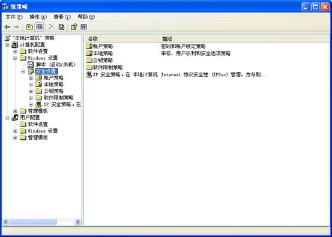
图2安全设置
选择账户策略―》账户锁定策略，如下图3。
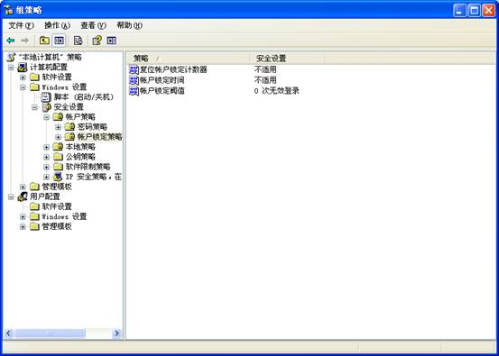
图3 账户策略
可设置为如下的策略，开启帐户策略可以有效的防止字典式攻击。
l 复位帐户锁定计数器30分钟
在此后复位帐户锁定计数器
此安全设置确定在某次登录尝试失败之后将登录尝试失败计数器重置为 0 次错误登录尝试之前需要的时间。可用范围是 1 到 99,999 分钟。
如果定义了帐户锁定阈值，此重置时间必须小于或等于帐户锁定时间。
默认值: 无，因为只有在指定了帐户锁定阈值时，此策略设置才有意义。
l 帐户锁定时间30分钟
帐户锁定时间
此安全设置确定锁定帐户在自动解锁之前保持锁定的分钟数。可用范围从 0 到 99,999 分钟。如果将帐户锁定时间设置为 0，帐户将一直被锁定直到管理员明确解除对它的锁定。
如果定义了帐户锁定阈值，则帐户锁定时间必须大于或等于重置时间。
默认值: 无，因为只有在指定了帐户锁定阈值时，此策略设置才有意义。
l 帐户锁定阈值5次
帐户锁定阈值
此安全设置确定导致用户帐户被锁定的登录尝试失败的次数。在管理员重置锁定帐户或帐户锁定时间期满之前，无法使用该锁定帐户。可以将登录尝试失败次数设置为介于 0 和 999 之间的值。如果将值设置为 0，则永远不会锁定帐户。
在使用 Ctrl+Alt+Del 或密码保护的屏幕保护程序锁定的工作站或成员服务器上的密码尝试失败将计作登录尝试失败。
默认值: 0。
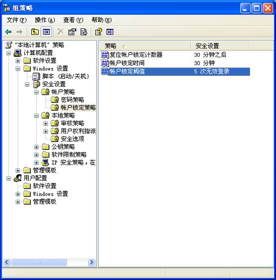
图4 设置账户策略
(2)开启密码策略
密码对系统安全非常重要，本地安全设置中的密码策略在默认的情况下都没有开启。参见图3，选择密码策略。
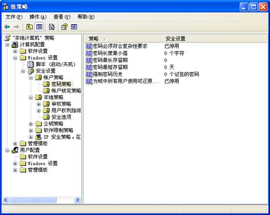
图5 密码策略
可进行如下的密码策略设置：
l 密码复杂性要求启用
密码必须符合复杂性要求。
此安全设置确定密码是否必须符合复杂性要求。
如果启用此策略，密码必须符合下列最低要求：
Ø 不能包含用户的帐户名，不能包含用户姓名中超过两个连续字符的部分
Ø 至少有六个字符长
包含以下四类字符中的三类字符：
Ø 英文大写字母(A 到 Z)
Ø 英文小写字母(a 到 z)
Ø 10 个基本数字(0 到 9)
Ø 非字母字符(例如 !、$、#、%)
在更改或创建密码时执行复杂性要求。
默认值:
在域控制器上启用。
在独立服务器上禁用。
注意: 默认情况下，成员计算机沿用各自域控制器的配置。
策略启用后，尝试新建一个用户test，密码设置为123456，会出现如下的出错提示。
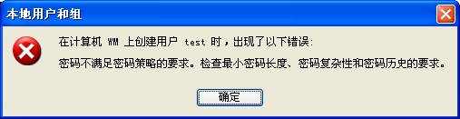
l 密码长度最小值6位
最短密码长度。此安全设置确定用户帐户密码包含的最少字符数。可以将值设置为介于 1 和 14 个字符之间，或者将字符数设置为 0 以确定不需要密码。
默认值:
在域控制器上为 7。
在独立服务器上为 0。
注意: 默认情况下，成员计算机沿用各自域控制器的配置。
l 密码最长存留期15天
密码最长使用期限
此安全设置确定在系统要求用户更改某个密码之前可以使用该密码的期间(以天为单位)。可以将密码设置为在某些天数(介于 1 到 999 之间)后到期，或者将天数设置为 0，指定密码永不过期。如果密码最长使用期限介于 1 和 999 天之间，密码最短使用期限必须小于密码最长使用期限。如果将密码最长使用期限设置为 0，则可以将密码最短使用期限设置为介于 0 和 998 天之间的任何值。
注意: 安全最佳操作是将密码设置为 30 到 90 天后过期，具体取决于您的环境。这样，攻击者用来破解用户密码以及访问网络资源的时间将受到限制。
默认值: 42。
l
密码最短使用期限。
此安全设置确定在用户更改某个密码之前必须使用该密码一段时间(以天为单位)。可以设置一个介于 1 和 998 天之间的值，或者将天数设置为
0，允许立即更改密码。
密码最短使用期限必须小于密码最长使用期限，除非将密码最长使用期限设置为 0，指明密码永不过期。如果将密码最长使用期限设置为 0，则可以将密码最短使用期限设置为介于 0 和 998 之间的任何值。
如果希望“强制密码历史”有效，则需要将密码最短使用期限设置为大于 0 的值。如果没有设置密码最短使用期限，用户则可以循环选择密码，直到获得期望的旧密码。默认设置没有遵从此建议，以便管理员能够为用户指定密码，然后要求用户在登录时更改管理员定义的密码。如果将密码历史设置为 0，用户将不必选择新密码。因此，默认情况下将“强制密码历史”设置为 1。
默认值:
Ø 在域控制器上为 1。
Ø 在独立服务器上设置为 0。
注意: 默认情况下，成员计算机沿用各自域控制器的配置。
l 强制密码历史5个
此安全设置确定再次使用某个旧密码之前必须与某个用户帐户关联的唯一新密码数。该值必须介于 0 个和 24 个密码之间。
此策略使管理员能够通过确保旧密码不被连续重新使用来增强安全性。
默认值:
Ø 在域控制器上为 24。
Ø 在独立服务器上为 0。
注意: 默认情况下，成员计算机沿用各自域控制器的配置。
若要维护密码历史的有效性，还要同时启用密码最短使用期限安全策略设置，不允许在密码更改之后立即再次更改密码。有关密码最短使用期限安全策略设置的信息，请参阅“密码最短使用期限”。
l 用可还原的加密来储存密码
使用此安全设置确定操作系统是否使用可还原的加密来储存密码。
此策略为某些应用程序提供支持，这些应用程序使用的协议需要用户密码来进行身份验证。使用可还原的加密储存密码与储存纯文本密码在本质上是相同的。因此，除非应用程序需求比保护密码信息更重要，否则绝不要启用此策略。
通过远程访问或 Internet 身份验证服务(IAS)使用质询握手身份验证协议(CHAP)验证时需要设置此策略。在 Internet 信息服务(IIS)中使用摘要式身份验证时也需要设置此策略。
默认值: 禁用。
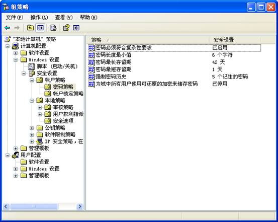
图6 设置密码策略
2.2网络安全策略
（1）关闭不必要的端口
关闭端口意味着减少功能，在安全和功能上面需要你做一点决策。
具体方法为：打开“ 网上邻居/属性/本地连接/属性/internet
协议(TCP/IP)/属性/高级/选项/TCP/IP筛选/属性” 打开“TCP/IP筛选”，添加需要的TCP、UDP协议即可。
1）关闭自己的139端口，ipc和RPC漏洞存在于此。
关闭139端口的方法是在“网络和拨号连接”中“本地连接”中选取“Internet协议(TCP/IP)”属性，进入“高级TCP/IP设置”“WinS设置”里面有一项“禁用TCP/IP的NETBIOS”，打勾重启后就关闭了139端口。
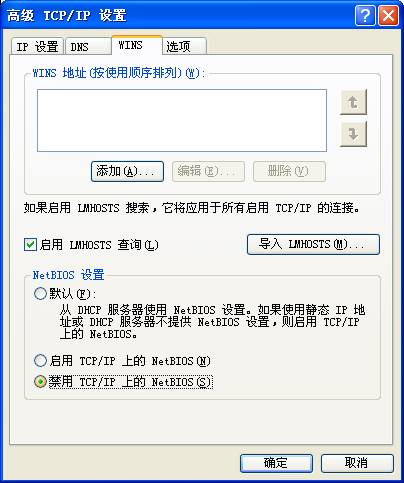
图7 关闭139端口
2）445端口的关闭
修改注册表，添加一个键值HKEY_LOCAL_MACHINESystemCurrentControlSetServicesNetBTParameters在右面的窗口建立一个SMBDeviceEnabled 为REG_DWORD类型键值为0这样就ok了。
3）3389的关闭
我的电脑上点右键选属性―》远程，将里面的远程协助和远程桌面两个选项框里的勾去掉。
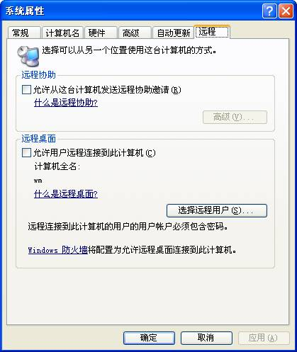
图8 关闭3389端口
设置完成后，可以运行CMD输入netstat �Cna，查看这些端口是否已经关闭。
（2）删除本地共享资源
1).查看本地共享资源
运行CMD输入net share，如果看到有异常的共享，那么应该关闭。但是有时你关闭共享下次开机的时候又出现了，那么你应该考虑一下，你的机器是否已经被黑客所控制了，或者中了病毒。
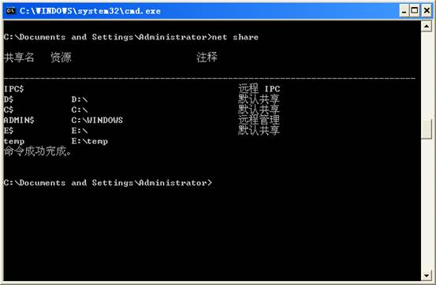
图9 本地共享资源
2).删除共享
在图9中显示C、D、E、ADMIN是默认共享，可以通过如下命令进行删除默认共享。
Ø
net
share admin$ /delete
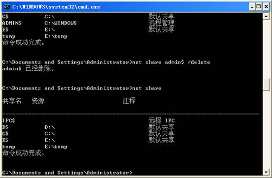
图10 删除默认共享ADMIN$
Ø
net
share c$ /delete
Ø
net
share d$ /delete（如果有e，f，……可以继续删除）
3).删除ipc$空连接
在运行内输入regedit，在注册表中找到
HKEY－LOCAL_MACHINESYSTEMCurrentControSetControlLSA
项里数值名称RestrictAnonymous的数值数据由0改为1。
(3) 防止rpc漏洞
打开管理工具――服务――找到RPC(Remote Procedure Call (RPC) Locator)服务――将故障恢复中的第一次失败，第二次失败，后续失败，都设置为不操作。XP SP2和2000 pro
sp4，均不存在该漏洞。
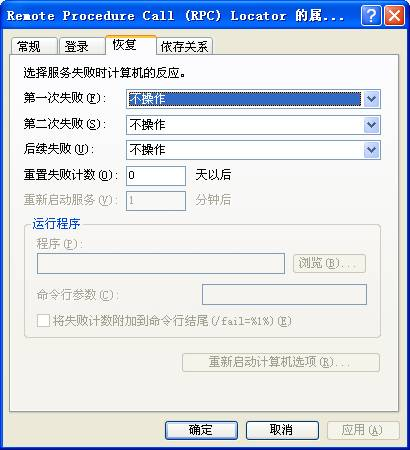
图10 防止RPC漏洞
2.3 应用安全策略设置
（1）禁用服务
打开控制面板，进入管理工具――服务，如下图11
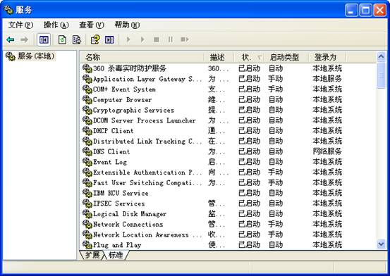
图11 服务
关闭以下服务：
Ａ.Alerter[通知选定的用户和计算机管理警报]
Ｂ.ClipBook[启用“剪贴簿查看器”储存信息并与远程计算机共享]
Ｃ.Distributed File System[将分散的文件共享合并成一个逻辑名称，共享出去，关闭后远程计算机无法访问共享
Ｄ.Distributed Link Tracking Server[适用局域网分布式链接]
Ｅ.Indexing Service[提供本地或远程计算机上文件的索引内容和属性，泄露信息]
Ｆ.Messenger[警报]
Ｇ.NetMeeting Remote Desktop Sharing[netmeeting公司留下的客户信息收集]
Ｈ.Network DDE[为在同一台计算机或不同计算机上运行的程序提供动态数据交换]
Ｉ.Network DDE DSDM[管理动态数据交换
(DDE) 网络共享]
Ｊ.Remote Desktop Help Session Manager[管理并控制远程协助]
Ｋ.Remote Registry[使远程计算机用户修改本地注册表]
Ｌ.Routing and Remote Access[在局域网和广域往提供路由服务.黑客理由路由服务刺探注册信息]
Ｍ.Server[支持此计算机通过网络的文件、打印、和命名管道共享]
Ｎ.TCP/IPNetBIOS Helper[提供 TCP/IP 服务上的 NetBIOS 和网络上客户端的
NetBIOS 名称解析的支持而使用户能够共享文件、打印和登录到网络]
Ｏ.Telnet[允许远程用户登录到此计算机并运行程序]
Ｐ.Terminal Services[允许用户以交互方式连接到远程计算机]
Ｑ.Window s Image Acquisition (WIA)[照相服务，应用与数码摄象机]
如果发现机器开启了一些很奇怪的服务，必须马上停止该服务，因为这完全有可能是黑客使用控制程序的服务端。
（2）本地策略
打开管理工具找到本地安全设置―》本地策略―》审核策略，如图12。
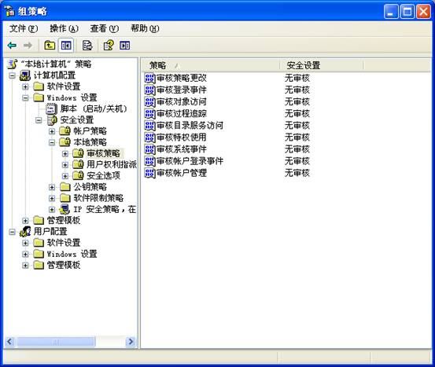
图12 审核策略
Ａ.审核策略更改 成功失败
此安全设置确定是否审核用户权限分配策略、审核策略或信任策略的每一个更改事件。
如果定义此策略设置，可以指定是否审核成功、审核失败或者根本不审核该事件类型。成功审核在成功更改用户权限分配策略、审核策略或信任策略时生成审核项。失败审核在更改用户权限分配策略、审核策略或信任策略失败时生成审核项。
若要将该值设置为“无审核”，请在此策略设置的“属性”对话框中选择“定义这些策略设置”复选框，清除“成功”和“失败”复选框。
默认值:
在域控制器上为“成功”。
在成员服务器上为“无审核”。
Ｂ.审核登陆事件 成功失败
此安全设置确定是否审核用户登录或注销计算机的每个实例。
对于域帐户活动，在域控制器上生成帐户登录事件；对于本地帐户活动，在本地计算机上生成帐户登录事件。如果同时启用帐户登录和登录审核策略类别，使用域帐户的登录在工作站或服务器上生成登录或注销事件，并且在域控制器上生成帐户登录事件。此外，在成员服务器或工作站上使用域帐户的交互式登录将在域控制器上生成登录事件，与此同时在用户登录时还检索登录脚本和策略。有关帐户登录事件的详细信息，请参阅“审核帐户登录事件”。
如果定义此策略设置，可以指定是否审核成功、审核失败或者根本不审核事件类型。成功审核在登录尝试成功时生成审核项。失败审核在登录尝试失败时生成审核项。
若要将该值设置为“无审核”，请在此策略设置的“属性”对话框中，选择“定义这些策略设置”复选框，清除“成功”和“失败”复选框。
默认值: 成功。
Ｃ.审核对象访问 失败
此安全设置确定是否审核用户访问指定了它自己的系统访问控制列表(SACL)的对象(例如文件、文件夹、注册表项、打印机等等)的事件。
如果定义此策略设置，可以指定是否审核成功、审核失败或者根本不审核该事件类型。成功审核在用户成功访问指定了相应 SACL 的对象时生成审核项。失败审核在用户尝试访问指定了 SACL 的对象失败时生成审核项。
若要将该值设置为“无审核”，请在此策略设置的“属性”对话框中选择“定义这些策略设置”复选框，清除“成功”和“失败”复选框。
请注意，使用文件系统对象“属性”对话框中的“安全”选项卡，可以在该对象上设置 SACL。
默认值: 无审核。
Ｄ.审核跟踪过程 无审核
此安全设置确定是否审核事件的详细跟踪信息，例如程序激活、进程退出、句柄复制以及间接对象访问。
如果定义此策略设置，可以指定是否审核成功、审核失败或者根本不审核该事件类型。成功审核在被跟踪的进程成功时生成审核项。失败审核在被跟踪的进程失败时生成审核项。
若要将该值设置为“无审核”，请在此策略设置的“属性”对话框中选择“定义这些策略设置”复选框，清除“成功”和“失败”复选框。
默认值: 无审核
Ｅ.审核目录服务访问 失败
此安全设置确定是否审核用户访问指定了它自己的系统访问控制列表(SACL)的 Active
Directory 对象的事件。
默认情况下，此值在默认域控制器组策略对象(GPO)中设置为“无审核”，并且对于其不具意义的工作站和服务器保持为“未定义”。
如果定义此策略设置，可以指定是否审核成功、审核失败或者根本不审核事件类型。成功审核在用户成功访问指定了 SACL 的 Active
Directory 对象时生成审核项。失败审核在用户尝试访问指定了 SACL 的 Active
Directory 对象失败时生成审核项。若要将该值设置为“无审核”，请在此策略设置的“属性”对话框中，选择“定义这些策略设置”复选框，清除“成功”和“失败”复选框。
请注意，使用 Active Directory 对象“属性”对话框中“安全”选项卡，可以在该对象上设置一个 SACL。这与“审核”对象访问是相同的，只不过它只适用于 Active Directory 对象，对于文件系统和注册表对象不适用。
默认值:
在域控制器上为“成功”。
Ｆ.审核特权使用 失败
此安全设置确定是否审核执行用户权限的用户的每个实例。
如果定义此策略设置，可以指定是否审核成功、审核失败或者根本不审核此类型的事件。成功审核在用户权限执行成功时生成审核项。失败审核在用户权限执行失败时生成审核项。
若要将该值设置为“无审核”，请在此策略设置的“属性”对话框中选择“定义这些策略设置”复选框，清除“成功”和“失败”复选框。
默认值: 无审核。
使用下列用户权限时不生成审核，即使为“审核权限使用”指定了成功审核或失败审核。启用对这些用户权限的审核往往会在安全日志中生成许多事件，这会影响计算机的性能。若要审核下列用户权限，请启用 FullPrivilegeAuditing 注册表项。
绕过遍历检查
调试程序
创建令牌对象
替换进程级令牌
生成安全审核
备份文件和目录
还原文件和目录
警告:
错误地编辑注册表可能严重损坏系统。在更改注册表之前，应当备份计算机上的所有重要数据。
Ｇ.审核系统事件 成功失败
此安全设置确定在用户重新启动或关闭计算机时或者在发生影响系统安全或安全日志的事件时是否审核。
如果定义此策略设置，可以指定是否审核成功、审核失败或者根本不审核该事件类型。成功审核在系统事件执行成功时生成审核项。失败审核在系统事件尝试失败时生成审核项。
若要将该值设置为“无审核”，请在此策略设置的“属性”对话框中选择“定义这些策略设置”复选框，清除“成功”和“失败”复选框。
默认值:
在域控制器上为“成功”。
在成员服务器上为“无审核”。
Ｈ.审核帐户登陆事件 成功失败
此安全设置确定是否审核用户登录或注销另一台计算机(用于验证帐户)的每个实例。在域控制器上对域用户帐户进行身份验证时会生成帐户登录事件。该事件记录在域控制器的安全日志中。在本地计算机上对本地用户进行身份验证时会生成登录事件。该事件记录在本地安全日志中。不生成帐户注销事件。
如果定义此策略设置，可以指定是否审核成功、审核失败或者根本不审核事件类型。成功审核在帐户登录尝试成功时生成审核项。失败审核在帐户登录尝试失败时生成审核项。
若要将该值设置为“无审核”，请在此策略设置的“属性”对话框中选择“定义这些策略设置”复选框，清除“成功”和“失败”复选框。
如果在域控制器上为帐户登录事件启用成功审核，则为该域服务器验证的每位用户记录审核项，即使该用户事实上已登录到加入该域的工作站上。
默认值: 成功。
Ｉ.审核帐户管理 成功失败
此安全设置确定是否审核计算机上的每个帐户管理事件。帐户管理事件示例包括:
创建、更改或删除用户帐户。
重命名、禁用或启用用户帐户。
设置或更改密码。
如果定义此策略设置，可以指定是否审核成功、审核失败或者根本不审核事件类型。成功审核在帐户管理事件成功时生成审核项。失败审核在帐户管理事件失败时生成审核项。
若要将该值设置为“无审核”，请在此策略设置的“属性”对话框中选择“定义这些策略设置”复选框，清除“成功”和“失败”复选框。
默认值:
在域控制器上为“成功”。
在成员服务器上为“无审核”。